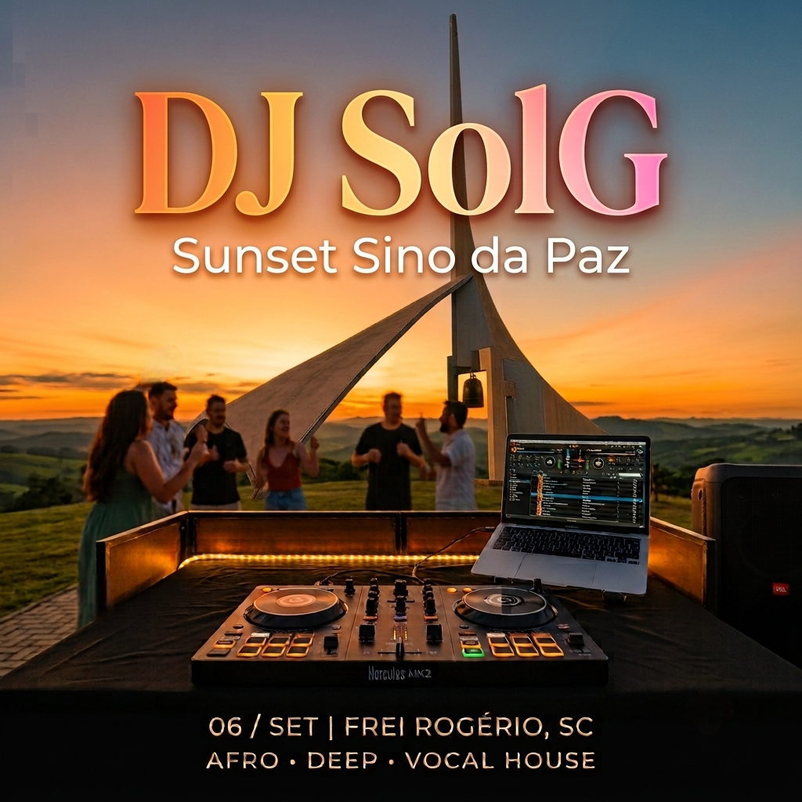

DJ SolG apresenta
Um set ao ar livre que começa com o sol ainda alto e termina no escuro. Sem tomada por perto, sem parede em volta: só o campo aberto, o sino e o som.
Role para ver o sol descer ↓
Como vai ser
Duas JBL PartyBox abertas em estéreo, uma de cada lado da cabine. Fica no meio para ouvir do jeito certo.
Bastões de LED em tom quente enquanto o sol cai, virando cor cheia quando escurece.
Drone por cima e câmera fixa de frente para a cabine. A pista vai aparecer no vídeo — dance de acordo.

cartaz.png na mesma pasta do index.html e ela aparece aqui.
O lugar
Campo aberto no alto de Frei Rogério, com vista limpa para o oeste. É o tipo de lugar onde o pôr do sol dura mais do que devia — e é exatamente por isso que o set é lá.
Chegue com folga: o melhor da luz acontece cedo e o estacionamento é o próprio campo. O chão é irregular, então venha de calçado fechado se puder.
Abrir no Google Maps ↗Checklist da galera
0 de 7 marcados
Sugestão de tracks
Afro, deep, organic, vocal — se cabe no sunset, cabe na lista. Monte a sua e mande para o SolG antes do dia 6.
Nenhuma faixa ainda. Comece pela que você quer ouvir na hora exata em que o sol encostar no horizonte.